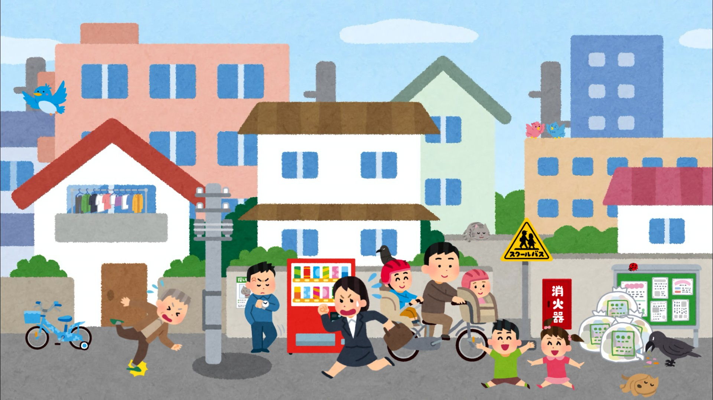

実験条件を選択してください。
実験を開始する前に、以下の項目にお答えください。
これから街中の画像を30秒間出します。出来るだけ何があったか覚えてください。

以下の計算問題を見て、暗算を行ってください（入力欄はありません）。
画像に関する以下の質問にお答えください。すべての問題について「回答」と「自信度」の両方を選択してください。
実験はすべて終了しました。ご協力ありがとうございました。
この画面を閉じて終了してください。